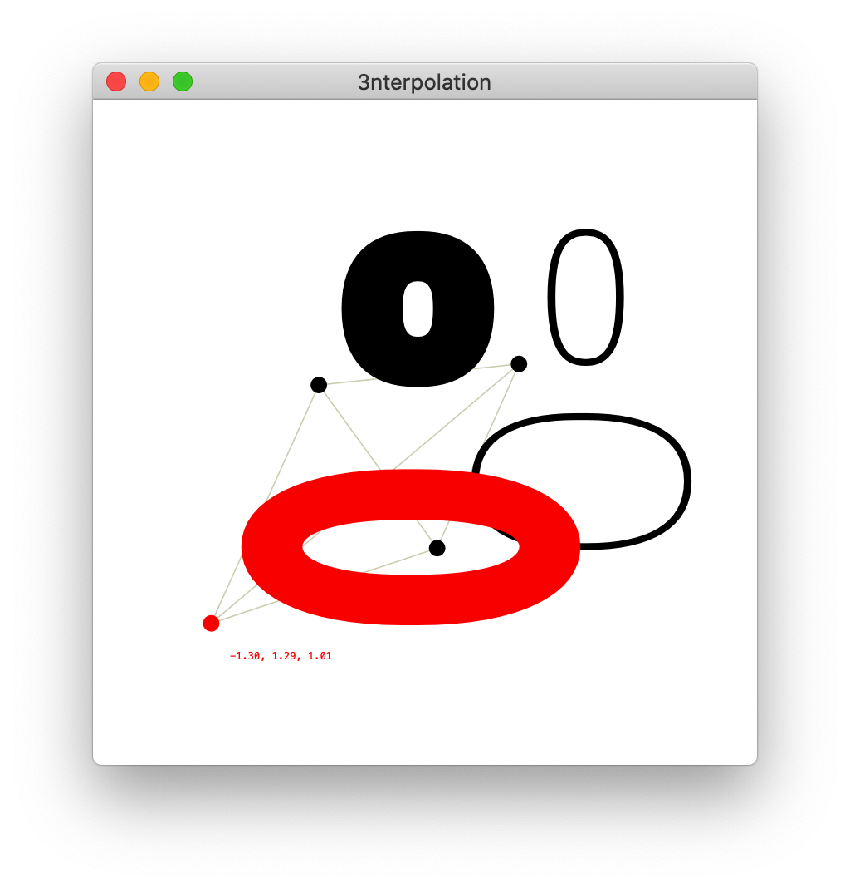

3nterpolation
Current release 1.0, March 2020, LettError
Small interactive tool that does a Barycentric interpolation of 3 master glyphs.
- Control click on each dot to select one of the glyphs of any of the open UFOs.
- If the selected glyphs are compatible, an interpolation shows up in red.
- Control click to copy the interpolation result to clipboard.
- Drag to experiment with different interpolations and extrapolations

- Whole fonts? Who knows.
- Make variable font? No.
- Weird name? Yes.
- Doesn't Glüphs? Probably